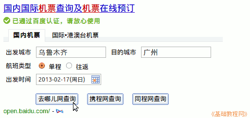
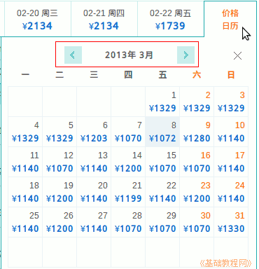

飞机旅行机票操作指南
作者：TeliuTe 来源：基础教程网
飞机旅行订票、登机、机票使用指南 返回目录乘飞机旅行需要订票、办理登机手续、打印登机牌、托运行李、安检、登机等步骤；
1、预定机票
1）可以在机场、代售点、网上查询当日的机票情况，网上可在百度中搜索机票应用，依次输入后点击查询；

2）在出来的查询结果中，可以查看一周的机票价格情况；
3）点击右边的价格日历可以查看某个月份的价格；

4）选好日期后，查看一下机票的起降时间、机场和准点率，根据自己的所处位置来选择合适的时间，一般至少要提前2个小时到达机场；
注意有些机票是分两段，中间需要在机场转机；
5）确定好以后，就可以准备购买机票，一般选择官网或旗舰店；
6）首先还是查询出机票，然后点击右侧的“预定”按钮；
7）在出来的订购页面中从上到下依次填写，包括登乘机人姓名和身份证，联系人手机号等，如果需要报销凭证，打勾下边的“行程单”；
如果经常使用这个航空公司，可以注册填写会员卡，将来可以用兑换免费机票；
8）购买成功后，联系人手机会收到短信信息，包括航班号、机票号码和提醒办理登机手续，机场和航站楼；
2、办理登机手续，打印登机牌
1）提前一天可以在网上和短信办理，登录航空公司的官网，点击“在线服务”，选择用证件号、会员号或机票号(数字)来办理；
2）点击“办理值机”按钮，依次选择行程、选择座位、完成办理，详细请参阅南航帮助页面：http://airport.csair.com/cki/jsp/help.html
3）办理成功后，将打印登机牌，如果不能打印，可在登机前到机场自助机或相应航空公司值班柜台打印登机牌；
4）自助机按提示选择语言，在指定位置扫描二代证件后，即可开始办理登机手续，最后打印出相应的登机牌，
注意右侧的登机口、登机时间和座位号，如果提示未分配或无法显示，则需到值班柜台去人工办理；

3、行李托运
1）打印好登机牌后，找到航空公司所在的区，可以询问机场服务人员；
2）太大的行李和包裹不能带到机舱，找到行李托运处，排队办理，工作人员核对证件和登机牌后签字，在登机牌贴上行李小票；
3）多件行李分别贴票，最好在行李上做上标记，以方便取行李时查找，托运的行李一般不超过20公斤；
4）带上机舱的包裹一般不超过20×40×55厘米、重量5公斤，太大会放不进机舱行李架，前排的座位下边也可以放置小包；
5）不能确定是否可携带的物品，可向客服咨询或在网上查询；
6）下飞机后，根据机场提示，到取行李处等待半个小时左右，然后行李在一个环形传送带上传动，根据自己行李的颜色形状，找到并拿下来；
7）在出口处会有工作人员核对登机牌和行李上的贴票，确认无误后，撕下登机牌上的小票；
8）行李推车可推出大厅至机场大巴处，有工作人员会推送回去；
4、安检
1）托运好行李后，接下来过安检，一般提前1个小时以上；
2）打印的登机牌上有登机口位置，如果显示未分配，则需要到人工柜台前办理；
3）短信办理的，也会有短信提示安检口通道位置；
4）在安检口，将身份证和登机牌检查一下，然后进入安检区；
5）在安检区，将随身携带包、大衣、鞋子、皮带放入盒内过安检机，人进入安检区内搜检一下；
6）然后再穿好衣服，检查身份证、登机牌等物品齐全，去登机口找个位置坐下候机；
5、登机
1）起飞前半个小时左右，等待登机广播提示；
2）一般左侧是普通乘客，右侧是会员或需照顾老人等通道，自觉排队即可；
3）在登机口检票会撕去登机牌右边的一侧；
4）过了检票口进入飞机场，登上准备好的机场大巴，找个位置站好，一般会非常拥挤；
5）等人齐了后，机场大巴会行驶至飞机舷梯，再验一下登机牌，就可以上飞机了；
6）穿过通道时，注意脚下台阶或斜坡，避免冬季滑倒；
6、座位和安全带
1）在登机牌上有座位号，前面是数字，后面有字母；
2）在机舱上边查看座位号，找到后将随身带的包放入行李架中，行李架门最后由机舱服务人员关闭；
3）开行李架门，找到边缘的一个标有“PUSH”的位置，按钮颜色跟旁边不一样，按一下即可打开，如果标的是“PULL”，拉一下即可；
4）前排座位下方也可以放置小包，
飞机飞行过程中，应当将手机关机或调成飞行模式；
5）坐好后，应当系好安全带，将正面的上盖扳起，分离锁扣两边；
6）将两端扣好，将带调整到合适的长度，可以询问服务人员，或旁边座位的乘客；
7）座位上方有一排指示灯，显示禁止吸烟和系好安全带，当系好安全带灯亮时，应当坐好并系好安全带；
8）还有风扇按钮，调节风力大小，阅读灯按钮，打开可以照射一束光线；
9）在扶手上，有靠背倾斜角度控制按钮，按下后可倾斜椅背到舒适角度，注意在吃饭时应当扶正，便于后排乘客进餐；
10）扶手上还有耳机插孔，选择频道和音量的按钮；
11）扶手可以抬起来，便于从座位上出去到通道，靠窗户座位可以看风景，靠通道的方便上厕所；
12）长途飞行会有免费用餐，可以询问选择自己喜欢的口味，椅子后背有一个平板可以放下来，做为临时餐桌；
13）飞机上还会提供免费饮料，选择自己喜欢的茶或其他饮品；
14）机上有卫生间，注意在飞行平稳时上卫生间；
15）飞机飞行时会有较大的轰鸣声，可带耳塞，经常做吞咽动作保持耳内气压平衡；
7、到达目的地下飞机
1）当飞机平滑着陆停下后，从舷梯下飞机；
2）出站后乘坐机场大巴、地铁或公交车到达市区；
3）注意降落时间，各地区时差，提前做好行程路线；
4）有人接送，提前将起降信息发送过去；
本节学习使用乘飞机的基础知识，如果你成功地完成了练习，请继续学习下一课内容；
本教程由86团学校TeliuTe制作|著作权所有
基础教程网：http://teliute.org/
美丽的校园……
转载和引用本站内容，请保留作者和本站链接。